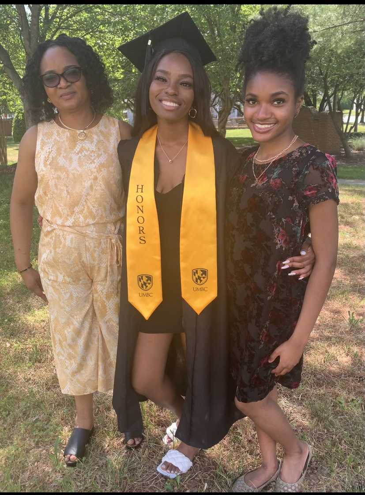
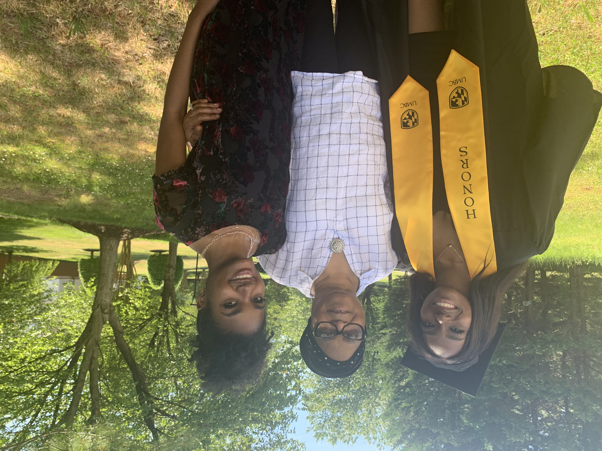
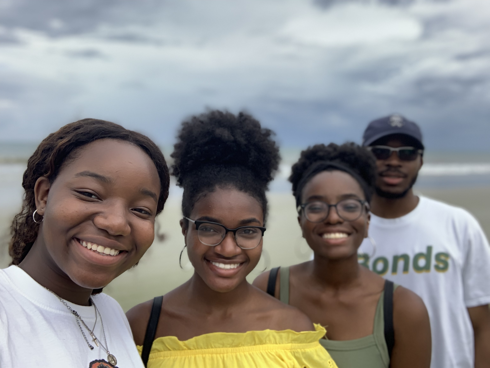
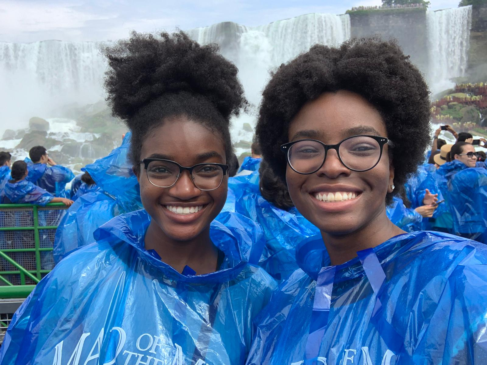
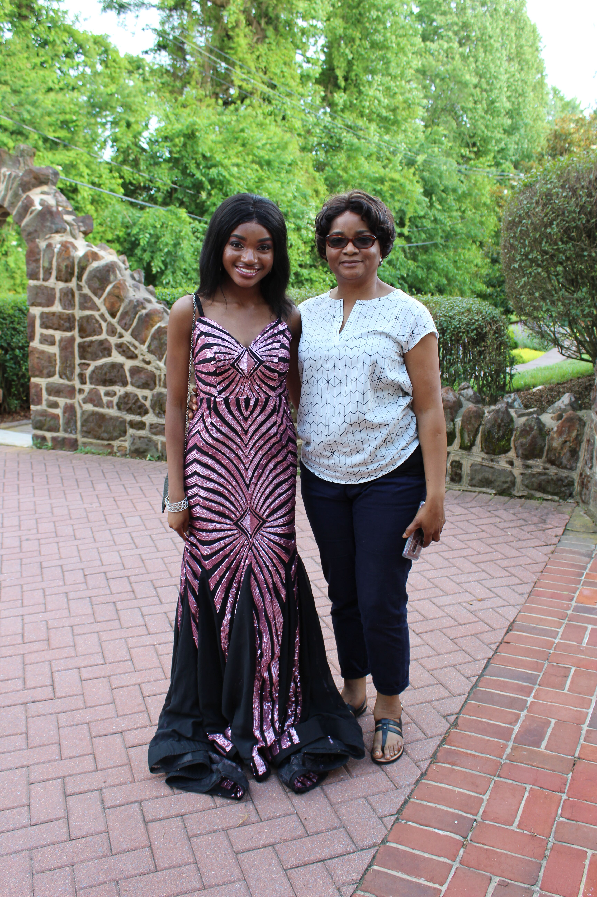
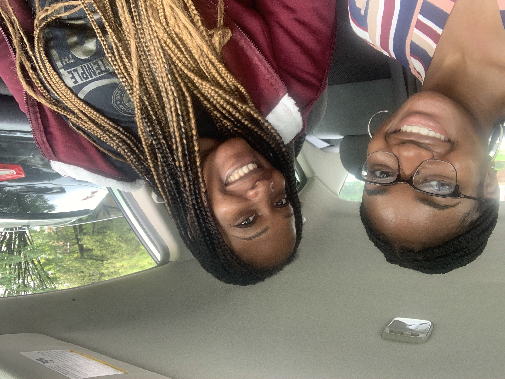
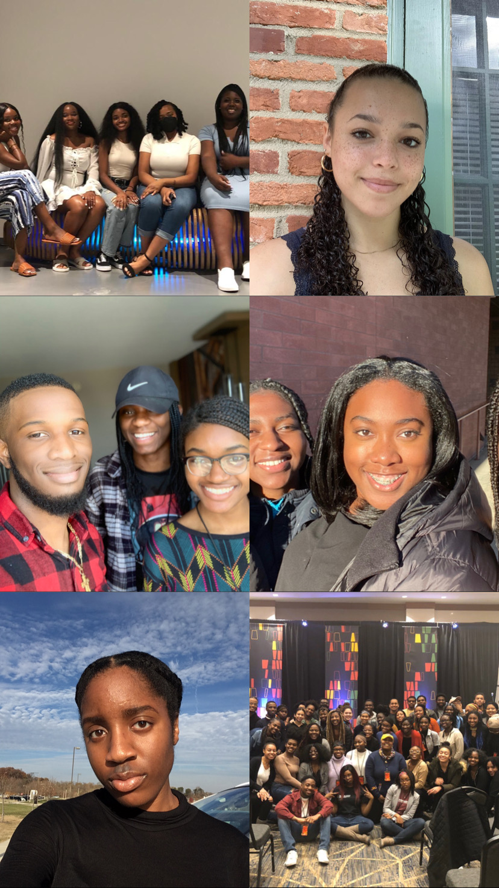
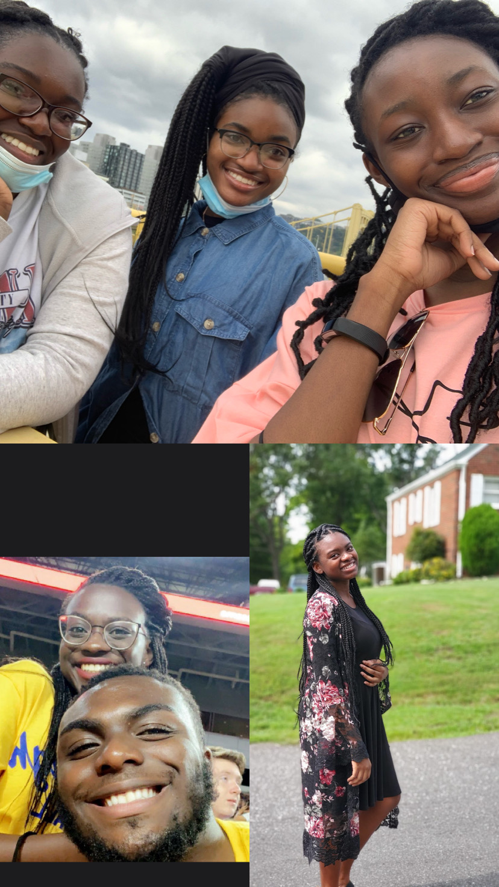

I am interested in pursuing a career in the entertainment technology industry as a software graphics engineer or as a technical artist.
In this field, I would like to help build software pipelines or platforms that help enable more representation among minorities in the media and in the big
screen. To achieve this, I am studying Computer Science with a minor in Studio Arts and a certificate in Digital Media.
Family and Home






To me family is a close community that confide, love, and depend on one another regardless of the circumstances. My family is one of my biggest support systems and a huge motivation for me. Each person shown here has made sacrifices or helped me in one way or another to get me where I am today.
I would say family is not always blood-related, but they treat you as if you are. It is a type of community that was force to become family but ended up choosing become family.
They overlook flaws and accept them for who they are. My family and my non-biological aunt (pictured bottom right) has always provided constant support and care towards me. They helped and guided me through making
life decisions, have been there in times of need, and add to my joy. Home is not just a location, it is the people that make me consider Prince George's County, Maryland my home. The community I grew up always encouraged me to want the best for myself and instilled in a desire to be sucessful. It has helped me determine to put in my best efforts in every environment I am in.
Entertainment
The video represents my Nigerian culture with the attire the band wears and the type of music performed. The music played reminds me of African parties and celebrations I have attended that hire a live band that performs similar music to this.
Media plays a major role as a form of entertainment. I use social media to connect with friends and family and as place to laugh, I watch movies and television shows to relax, and I listen to music to relieve stress and as a pasttime hobby in addition to singing. Media also acts as an educational tool to teach me new topics or skills or inform me of what is happening nationally and globally. Media acts as a form of communication between the listener and the speaker and the actor and the viewer. It provides a voice for those that are usually unheard and it delivers a message to various groups of people. Without media, I think it would result in there being miscommunication. One of my favorite artists Lauryn Hill said "miscommunication leads to complication" and without the media perfoming its role as a communicator, many advancements and progress would not be reached in society. I believe I recreate media whenever I indulge in graphic design or when I sing. I also think making connections is another way I remake media in my everyday life.
Community


My community is made up of multiple independent groups from different places that are created through a bond or interest. Some of the communities I am in are with people of the same belief, morals, major, hobbies, hometown, and ethnicity. I am apart of real communities, an example being the collage pictured below which are some of my friends I made through attending the same high school, church, and college. The other communities, which are mainly professional, are virtual and made up of women in computing and STEM that have the same passion to interest the representation among women in the tech industry. I have not met majority of them in person, yet the support they show and resources they provide make us a close knit community.
I find my ground with people who are of similar yet different mindsets than me yet push and challenge me to grow in different areas of life.
School
When I was applying for colleges, I never thought I would end up at Pitt. When my dream school waitlisted me, I began to look at my other options and ended up picking Pitt. I do not regret my decision to come to Pitt, in fact I'm grateful and blessed that I did not end up going to NCSU for college. Pitt has provided me many opportunities academically, allowed me to meet some amazing people, and have received tremendeous support from faculty and toher students. I am able to flourish and grow as a person and individual because of the environment here at Pitt. While I am only a junior and still have many more experiences left before I graduate, I am looking forward to the unexpected and continually trying new things.